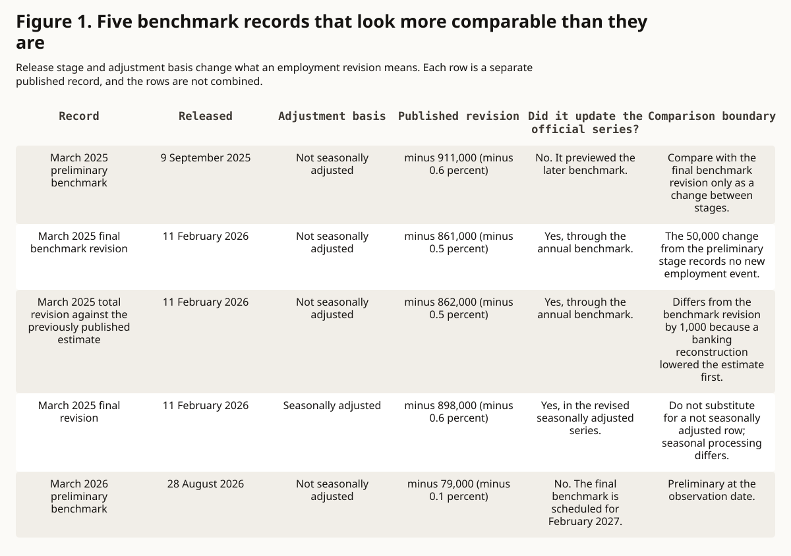
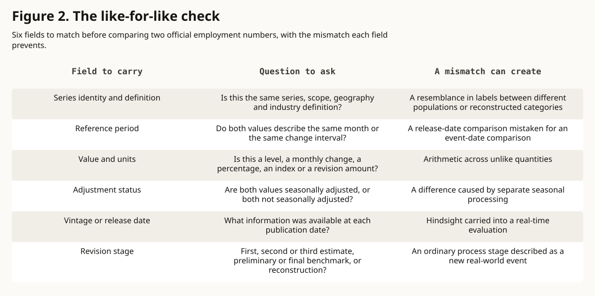

essay · evidence public life
The Number Has a Vintage
An employment estimate should travel with its vintage, adjustment status, series definition and revision stage, because each version of the number answers a different question.
In this article
Research summary and limits
Question. When an official employment estimate is revised, what can its first and later versions establish, and when does a comparison stop being like for like?
Finding. The first release records what was knowable at the time. Later releases can improve the historical series. Mixing those roles, or mixing adjustment basis and revision stage, can turn an ordinary revision into a false comparison.
Evidence. Bureau of Labor Statistics revision policy, benchmark releases and methods pages for the national Current Employment Statistics survey, with the Philadelphia Fed real-time data set as an example of research by vintage.
Limit. The March 2026 benchmark is preliminary until February 2027. Two benchmark years are examples and give no trend or accuracy score, and a revision alone says nothing about motive.
One month, several official numbers
On 28 August 2026 the U.S. Bureau of Labor Statistics published a preliminary benchmark revision for March 2026 total nonfarm payroll employment: minus 79,000, or minus 0.1 percent. The same release says the official establishment survey estimates were left unchanged by this preview. The final benchmark is scheduled for February 2027, with the January 2027 jobs report. So the number arrives with a status attached. It is an official preview of a level difference, and the official series has yet to absorb it. BLS preliminary benchmark, March 2026
That status belongs beside the number whenever it is repeated. A jobs estimate is a value, and it is also a version: a particular release, at a particular stage, with a particular adjustment. Later releases can improve the historical series. The first release stays the right record of what people could know at the time. Confusing those roles is how an ordinary revision becomes a false comparison.
Four ways the same month changes
BLS describes its revisions as a balance between speed and accuracy. For the national Current Employment Statistics survey, a first estimate appears about three weeks after the reference month. It is revised in each of the next two monthly releases as more sample reports arrive, and then held until the annual benchmark. BLS revisions policy, CES questions and answers
Once a year, the March level is re-anchored to counts drawn mainly from unemployment insurance tax records, which BLS says cover about 97 percent of employment in the survey's scope. Other sources estimate the rest. The months around March are then adjusted to the new level. Seasonal models are re-estimated each year as well, and seasonally adjusted figures can change for the previous five years. BLS can also reconstruct historical series when industry classifications, scope or data errors change. Under a new industry code structure, a series can be converted whole, combined with another, split, or published in less detail. CES questions and answers, CES methods: calculation, Industry classification overview
Each mechanism changes a different part of the record. Later sample reports change one month's estimate. A benchmark changes a level and the months around it. Seasonal re-estimation changes the adjusted series. A reconstruction can change what a label covers.
Which release answers which question
BLS publishes vintage tables that keep each value it released for a reference month, release by release, with the first and third estimates set beside a recent one. That design lets a reader answer two separate questions. What did the agency say at the time? What does the current history say now? CES vintage data
Someone judging a forecast, a policy call or a news story made in June 2025 should use the information available in June 2025. A later benchmark can improve the history without giving that person information they never had. The Federal Reserve Bank of Philadelphia maintains a real-time data set of dated snapshots for this kind of work, described by Dean Croushore and Tom Stark in a 2001 journal article. Philadelphia Fed real-time data set, Croushore and Stark, 2001
For the best current account of what happened to employment, the latest consistent vintage is usually the right input. Freezing a first estimate forever would throw away later sample reports and the wider benchmark counts. Neither vintage is the one true number. The question decides which vintage fits.
How a comparison quietly breaks
The March 2025 benchmark shows how many official numbers can describe one month. The preliminary benchmark, released on 9 September 2025, found the benchmark count 911,000 below the survey's not seasonally adjusted estimate, a gap of 0.6 percent. The final benchmark revision, released on 11 February 2026, put that gap at 861,000, or 0.5 percent, on the same basis. Measured against the sample-based estimate published before the benchmark, the total not seasonally adjusted revision was minus 862,000. The seasonally adjusted March level fell by 898,000 in the revision, or 0.6 percent. Figure 1 sets these records side by side. BLS preliminary benchmark, March 2025, CES benchmark article, March 2025, CES benchmark technical notes
The 50,000 gap between the preliminary and final not seasonally adjusted benchmarks is a change between two stages of measurement. It records no new hiring or layoffs. The 1,000 gap between the 861,000 and 862,000 figures comes from a reconstruction of two banking series, which lowered the March 2025 estimate by 1,000 before benchmarking. A seasonally adjusted figure cannot stand in for an unadjusted one, because seasonal processing is a separate step.
Other mismatches are common. A benchmark changes a level, and a level change is a different quantity from one month's payroll gain. A forecast judged against today's revised history is held to information it never had. A series label can stay the same while a reconstruction changes what it covers. Summary statistics carry the same risk. The BLS table of monthly revisions reports a mean revision, which shows direction, and a mean absolute revision, which shows size. A mean near zero can hide large revisions that offset each other. The same table leaves out later benchmark, seasonal and other updates, so it cannot show how far first releases sit from the current history. CES monthly revisions table
A revision alone does not establish fabrication, political interference or a directional bias. Planned revisions are part of the declared method. BLS describes the benchmark revision as the difference between two separately produced counts, each with its own errors. A claim of interference would need its own evidence. Revisions still deserve scrutiny, and that scrutiny needs a defined statistic and a like-for-like comparison. CES methods: calculation, BLS revisions policy
Six fields to carry with a public number
A short practice follows from these mechanisms. When citing an official employment number, carry six fields: the series identity or exact label, the reference period, the value and its units, the adjustment status, the release date or vintage, and the revision stage. Add the source link, and when the value is preliminary, the date of the next scheduled revision. Figure 2 lists the question each field answers. The checklist is an editorial proposal drawn from these sources. BLS has not adopted it, and it has not been tested with readers.
Matching all six fields makes two values comparable. It does not show that a comparison matters, that a change has a cause, or that either estimate is free of error. A revised number can be different and still legitimate. The useful question is which vintage answers the decision at hand, and whether the two values were measured the same way.
Figure 1. Five benchmark records that look more comparable than they are
Release stage and adjustment basis change what an employment revision means. Each row is a separate published record, and the rows are not combined.

What this cannot show. Monthly job losses, the final March 2026 value, any motive, or that one adjustment basis is better than the other.
Read the data and method
| Record | Released | Adjustment basis | Published revision | Did it update the official series? | Comparison boundary |
|---|---|---|---|---|---|
| March 2025 preliminary benchmark | 9 September 2025 | Not seasonally adjusted | minus 911,000 (minus 0.6 percent) | No. It previewed the later benchmark. | Compare with the final benchmark revision only as a change between stages. |
| March 2025 final benchmark revision | 11 February 2026 | Not seasonally adjusted | minus 861,000 (minus 0.5 percent) | Yes, through the annual benchmark. | The 50,000 change from the preliminary stage records no new employment event. |
| March 2025 total revision against the previously published estimate | 11 February 2026 | Not seasonally adjusted | minus 862,000 (minus 0.5 percent) | Yes, through the annual benchmark. | Differs from the benchmark revision by 1,000 because a banking reconstruction lowered the estimate first. |
| March 2025 final revision | 11 February 2026 | Seasonally adjusted | minus 898,000 (minus 0.6 percent) | Yes, in the revised seasonally adjusted series. | Do not substitute for a not seasonally adjusted row; seasonal processing differs. |
| March 2026 preliminary benchmark | 28 August 2026 | Not seasonally adjusted | minus 79,000 (minus 0.1 percent) | No. The final benchmark is scheduled for February 2027. | Preliminary at the observation date. |
- Does not prove
- Monthly job losses, the final March 2026 value, any motive, or that one adjustment basis is better than the other.
- Scope
- National CES total nonfarm employment, March 2025 and March 2026 benchmarks.
- Units
- Revision level in jobs and the published percent revision.
- Denominator
- The corresponding total nonfarm employment estimate for each record, as defined by BLS. The percentages are transcribed and not recomputed from rounded values.
- Date
- Releases from 9 September 2025 to 28 August 2026, observed 1 October 2026.
- Transformation
- Published levels and percentages are transcribed. The only computed value is the 50,000 difference between the final and preliminary not seasonally adjusted March 2025 benchmark revisions (minus 861,000 less minus 911,000). Years, industries and adjustment bases are not averaged.
- Uncertainty
- Published figures are rounded. The March 2026 value is preliminary. Detailed industries can revise differently from the total.
- Limitations
- Two benchmark years are examples. They are not a trend, an accuracy distribution, a performance score or a political comparison.
Figure 2. The like-for-like check
Six fields to match before comparing two official employment numbers, with the mismatch each field prevents.

What this cannot show. That a comparison is useful or that the source series is free of error.
Read the data and method
| Field to carry | Question to ask | A mismatch can create |
|---|---|---|
| Series identity and definition | Is this the same series, scope, geography and industry definition? | A resemblance in labels between different populations or reconstructed categories |
| Reference period | Do both values describe the same month or the same change interval? | A release-date comparison mistaken for an event-date comparison |
| Value and units | Is this a level, a monthly change, a percentage, an index or a revision amount? | Arithmetic across unlike quantities |
| Adjustment status | Are both values seasonally adjusted, or both not seasonally adjusted? | A difference caused by separate seasonal processing |
| Vintage or release date | What information was available at each publication date? | Hindsight carried into a real-time evaluation |
| Revision stage | First, second or third estimate, preliminary or final benchmark, or reconstruction? | An ordinary process stage described as a new real-world event |
- Does not prove
- That a comparison is useful or that the source series is free of error.
- Scope
- One proposed reporting check for official employment estimates.
- Units
- None across the figure; the value row requires the units the source declares.
- Denominator
- Not applicable. The six rows are reporting fields, not sampled observations.
- Date
- Proposed 1 October 2026 from sources observed the same day.
- Transformation
- Qualitative mapping from each field to the mismatch it prevents. No score, ranking, weight or pooled metric is computed.
- Uncertainty
- The checklist has not been tested as a reader-comprehension tool and may need additions for other statistics.
- Limitations
- It checks whether two values describe the same thing. It does not judge estimator quality, cause or policy meaning.
Sources
- Current Employment Statistics Preliminary Benchmark (National), March 2026. U.S. Bureau of Labor Statistics. Preliminary March 2026 benchmark, its status as a preview and the scheduled final revision. Published 2026-08-28; observed 2026-10-01.
- Current Employment Statistics Preliminary Benchmark (National), March 2025. U.S. Bureau of Labor Statistics. Preliminary March 2025 benchmark and its not seasonally adjusted basis. Published 2025-09-09; observed 2026-10-01.
- CES National Benchmark Article: estimates revised to incorporate March 2025 benchmarks. U.S. Bureau of Labor Statistics. Final March 2025 revisions on both adjustment bases, the banking reconstruction and benchmark coverage. This current-article page is replaced each February; BLS also keeps the 2025 article as a dated PDF. Published 2026-02-11; observed 2026-10-01.
- Technical Notes for the CES National Benchmark. U.S. Bureau of Labor Statistics. Preliminary and final total nonfarm benchmark revisions by year, seasonal re-estimation and benchmark error as a net of two processes. Page last modified 11 February 2026. Publication date unavailable; observed 2026-10-01.
- CES Frequently Asked Questions. U.S. Bureau of Labor Statistics. Monthly revision schedule, five-year seasonal revisions, benchmark coverage, wedge procedure and reconstructions. Page last modified 20 April 2026. Publication date unavailable; observed 2026-10-01.
- CES Vintage Data Information. U.S. Bureau of Labor Statistics. Structure of the vintage tables, with first, third and recent releases for each reference month. Page last modified 6 March 2026. Publication date unavailable; observed 2026-10-01.
- Nonfarm Payroll Employment: Revisions between over-the-month estimates, 1979-present. U.S. Bureau of Labor Statistics. Monthly revision table, definitions of mean and mean absolute revision, and its exclusion of later updates. Page last modified 17 September 2026. Publication date unavailable; observed 2026-10-01.
- Revisions. U.S. Bureau of Labor Statistics. Agency policy on revisions from later data, seasonal recalculation, benchmarking and classification updates. Publication date unavailable; observed 2026-10-01.
- Handbook of Methods, Current Employment Statistics: Calculation. U.S. Bureau of Labor Statistics. Benchmark construction, noncovered employment and the benchmark revision as a net of errors in two processes. Page last modified 28 February 2025. Publication date unavailable; observed 2026-10-01.
- CES Industry Classification Overview. U.S. Bureau of Labor Statistics. How a new industry code structure converts, combines, splits or reduces the detail of CES series, with histories usually rebuilt to 1990. Page last modified 11 February 2026. Publication date unavailable; observed 2026-10-01.
- Real-Time Data Set for Macroeconomists. Federal Reserve Bank of Philadelphia. Maintained data set of dated snapshots, or vintages, for research, policy analysis and forecasting. Living page, updated monthly. Publication date unavailable; observed 2026-10-01.
- A Real-Time Data Set for Macroeconomists. Dean Croushore and Tom Stark, Journal of Econometrics 105(1), pages 111 to 130. Journal article describing the real-time data set, November 2001. The bibliographic record was checked; the full text sits behind a publisher paywall and was not read. Publication date unavailable; observed 2026-10-01.
Claim notes and limitations
The preliminary March 2026 total nonfarm benchmark revision was minus 79,000, or minus 0.1 percent, and it did not update official estimates.
Sources: prebmk-2026
- Scope
- National CES total nonfarm, not seasonally adjusted March level; release of 28 August 2026, with the final revision scheduled for February 2027.
- Uncertainty
- Preliminary at the observation date; the final value is unknown, and the schedule can change.
- Does not prove
- A loss of 79,000 jobs in any month, a revision to a monthly payroll-change headline, or the final benchmark.
National CES first estimates are revised in each of the next two monthly releases as more sample reports arrive, then held until the annual benchmark.
Sources: ces-faq, ces-revisions
- Scope
- National CES monthly estimation.
- Uncertainty
- The third estimate is the final sample-based value and can still change at benchmark or through reconstruction.
- Does not prove
- That the third release is the final historical value or that any revision is small.
Unemployment insurance records cover about 97 percent of employment in CES scope; other sources estimate the rest of the benchmark level.
Sources: ces-faq, benchmark-2025, hom-calculation
- Scope
- BLS description of the annual benchmark source.
- Uncertainty
- Coverage is broad, and the noncovered part is estimated.
- Does not prove
- That the benchmark source is a complete or error-free census.
Seasonally adjusted CES estimates can be revised for five years when seasonal models are re-estimated each year.
Sources: ces-faq, benchmark-notes
- Scope
- National CES seasonal adjustment.
- Uncertainty
- Reconstructed series can be re-adjusted over longer spans.
- Does not prove
- That every year changes materially or in the same direction.
CES can reconstruct historical series when classifications, scope or data errors change, and a new industry structure can convert, combine, split or reduce the detail of series.
Sources: ces-faq, ces-naics, benchmark-2025
- Scope
- Documented mechanisms; whether a named series changed requires its own note.
- Uncertainty
- The effect differs by series and by year.
- Does not prove
- That every historical comparison is broken or that a reconstruction records a real economic event.
BLS vintage tables record what was published for the same reference month at successive releases.
Sources: ces-vintage
- Scope
- Official vintage data structure, with first, third and recent releases set out together.
- Uncertainty
- Which vintage fits depends on the question asked.
- Does not prove
- That any one displayed vintage is the right input for every question.
Real-time vintages and the latest vintage answer different evaluation questions.
Sources: ces-vintage, rtdsm, croushore-stark
- Scope
- Methodological distinction drawn from the vintage tables and the stated purpose of real-time data sets.
- Uncertainty
- The Croushore and Stark article was identified by its bibliographic record; its full text was not read.
- Does not prove
- That older vintages are better estimates of history or that the latest data are unsuitable for historical analysis.
For March 2025 the not seasonally adjusted benchmark revision moved from minus 911,000 preliminary to minus 861,000 final, a 50,000 difference between stages.
Sources: prebmk-2025, benchmark-notes, benchmark-2025
- Scope
- National CES total nonfarm, values in thousands, rounded for publication, after removing scope changes.
- Uncertainty
- Two stages of one benchmark year.
- Does not prove
- A monthly job loss, a new employment event, or a tendency of preliminary benchmarks to move toward zero.
The final March 2025 revision was minus 898,000 seasonally adjusted, minus 862,000 not seasonally adjusted against the previously published estimate, and minus 861,000 as the benchmark revision after a banking reconstruction.
Sources: benchmark-2025, benchmark-notes
- Scope
- BLS benchmark article tables 2, 3 and 4 and technical note table 5.
- Uncertainty
- The 1,000 difference comes from a reconstruction that lowered the March 2025 estimate before benchmarking; values are rounded.
- Does not prove
- That one adjustment basis is better or that the figures can be substituted for one another.
The benchmark revision is the difference between two separately produced counts and reflects the net of errors in both.
Sources: hom-calculation, benchmark-notes, prebmk-2026
- Scope
- BLS method description; BLS treats the figure as a proxy for total survey error.
- Uncertainty
- The split of error between the two processes is not measured by this figure.
- Does not prove
- Which process caused how much error, or any motive.
Mean revision shows direction and mean absolute revision shows size, and the monthly revision table excludes later benchmark, seasonal and other updates.
Sources: ces-revisions
- Scope
- Definitions and notes of the BLS monthly revision table.
- Uncertainty
- Time windows and sample-design periods must stay visible.
- Does not prove
- That a mean near zero means small revisions, or how far first releases sit from current history.
A revision alone does not establish fabrication, political interference or directional bias.
Sources: bls-revisions, hom-calculation, ces-revisions
- Scope
- Inference from the declared revision mechanisms and the need for a defined directional statistic.
- Uncertainty
- A specific interference claim would need separate evidence.
- Does not prove
- That interference is impossible, that every process decision is neutral, or that revisions should escape scrutiny.
A like-for-like comparison needs a matching series identity, reference period, units, adjustment status, vintage and revision stage.
Sources: ces-faq, ces-vintage, ces-revisions, ces-naics, rtdsm
- Scope
- Editorial checklist drawn from the documented mechanisms; BLS has not adopted it.
- Uncertainty
- The checklist has not been tested with readers and may need additions for other statistics.
- Does not prove
- That a matched comparison is meaningful, causal or free of measurement error.
Corrections
No corrections recorded.